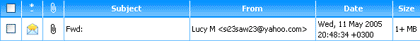
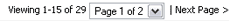
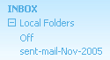
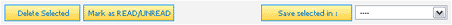

You arrive in your Inbox upon successful login or by clicking the "Inbox" button in the main menu. Common Inbox tasks include:
Checking Your Email Accounts
Whenever the Inbox is loaded, your email account and any mailboxes are checked for new messages. You may also check
for new email at any time when you are using EMU Webmail by clicking on the "Get New Email" link at the top of the main menu. Clicking this link
automatically returns you to the Inbox and displays any new messages.

When new messages are found, they are downloaded, filtered (if necessary), and display on separate rows. By default, each row includes
a checkbox, a message status icon, an attachment icon, the message subject, the message sender, the send date, and the message's size.
The checkbox is used when saving, moving, and deleting messages (discussed below). The message status icon displays whether or not the email is new, has
been read, or has been read and answered. The attachment icon, a paperclip, will only display if the email contains an attachment.
Navigating the Inbox & Folders
Unless you regularly receive and keep only a handful of messages, your email Inbox and folders will only display a limited number
of messages per page. This limit is imposed to make EMU Webmail easier to use by having fewer messages to view on a single page, as well
as decreasing page load times. Your EMU Webmail Administrator sets the default limit of messages per page, however you may override this
by setting your own limit on the Account Info page.

When the messages contained in a single folder span more than one page, navigation between the pages is accomplished using the message
navigation controls that appear above and below your message list. The controls allow you to step back and forth from page to page or to
go directly to a specific page using the dropdown selection box.

EMU Webmail supports multiple user folders, meaning you may optionally store messages in folders other than your Inbox. Folders are
managed via the Folder Manager but are always just a simple click away via the main menu.
Inside the main menu is a folder tree which links to all the folders in your account.
Reading Messages
Messages are read by simply clicking on the linked "Subject" text of the specific email you wish to read. Upon clicking, you are taken to
the Read Message page where you will be able to view all message contents, including attachments.
Sorting the Inbox
When a folder is viewed, it always automatically sorts and lists messages by date. However, you may change the sort order of a particular
folder you are viewing by clicking on the linked labels at the top of most columns of the message list. For example, clicking "From" sorts
the messages (alphabetically) by the name or email address of the sender, and so on. Messages may be sorted by message status, attachment,
subject, sender, date, and size.
Filtering Messages
You may optionally filter your email based on the content of each message. For example, you may create a filter that automatically stores
any new messages from the send "Mom" to a special folder you designate. Filter creation and management tools are available in the
Filter Manager.

If you have already set a filter, you may have elected to add the "Apply Filters" button to the message options that appear above and
below the message list in all folders. When this button is clicked, any active filters listed in your
Filter Manager will be applied to your Inbox.
Saving and Deleting Messages
Saving and deleting messages are any easy may of keeping your own Webmail account simple and easy-to-use. Delete unneeded messages and
save those you wish to keep by marking the checkbox next to the message(s) you wish to affect and then clicking on the appropriate
function from the message options.
Delete by marking the message(s) and clicking the "Delete Selected" button. Move messages from your Inbox to other folders
by marking the message(s), choosing a folder from the dropdown selection box, then clicking on the "Save Selected In:" button. You can save
messages in a folder that has not already been created by choosing "New Folder" from the dropdown selection box and entering a name for
the folder in the resulting popup window. Folders are normally managed via the Folder Manager.
Messages can also be saved and deleted directly from the Read Message page